1004B24 POWER UNIT WITH MANUAL GEARBOX WITH HYDRAULIC SELECTION - R.R.
- Path
- Procedures > 10 ENGINE > 1004 ENGINE AND POWER UNIT > 1004B POWER UNIT ASSEMBLY > 1004B24 POWER UNIT WITH MANUAL GEARBOX WITH HYDRAULIC SELECTION - R.R.
- Kind
- repair procedure (removal / refitting; the operation number is the code)
- Applies to
- engines: 2.2 JTS; all production periods
- Interactive page
- https://sloeber94.github.io/elrnDB-aBrrSpdr/en/#/946004287
Applies to: engines: 2.2 JTS; all production periods
 Removing
Removing
 Refitting
Refitting- Position the vehicle on the lift and place the gear lever in N.
- Connect an Examiner and run the pressurization procedure.
Op. 0010T84 COOLANT FOR AIR CONDITIONING SYSTEM - DEHYDRATE AND REPRESSURIZE
Op. 7055B54 UNDER ENGINE PROTECTION/GUARD - R.R.
Op. 7210A15 R.R. FRONT WING/HEADLAMP HOUSING CROSSMEMBER
Op. 1088B20 ENGINE COOLING RADIATOR - R + R
Op. 1048A28 VACUUM AIR CIRCUIT RESONATOR PIPE - R+R
Op. 1048A34 HOSE(S) FROM FLOW METER TO AIR SUPPLY CAPACITY CASE - R + R
Op. 7210A18 R.R FRONT CROSSMEMBER
- Using a suitable syringe, draw off the power assisted steering fluid from the reservoir.
Op. 4130B40 SUPPLY PIPE FROM PUMP TO POWER STEERING BOX - R.R.
1. Loosen the band and disconnect the power assisted steering fluid pipe from the reservoir to the pump, power assisted steering pump side.
2. Disconnect the rapid connector for the return pipe from the heat exchanger pipe to the power assisted steering fluid reservoir, heat exchanger side.
3. Undo the bolts (3a) and remove the power assisted steering fluid reservoir (3b) complete with pipes (3c).
4. Loosen the band and disconnect the coolant return pipe, cylinder head side.
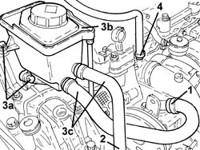
Applies to: engines: 2.2 JTS; all production periods
1. Disconnect the rapid connector for the power assisted steering system heat exchanger inlet pipe, heat exchanger side.
2. Remove the heat exchanger pipe (2a) after having released it from the securing band (2b).
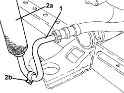
Applies to: engines: 2.2 JTS; all production periods
1. Undo the bolt (1a) and disconnect the inlet/outlet pipes from the air conditioning compressor (1b).
2. Undo the nut (2a) and disconnect the air conditioning pipes intermediate flange (2b).
3. Remove the air conditioning system pipes.
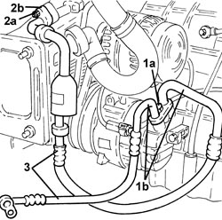
Applies to: engines: 2.2 JTS; all production periods
1. Disconnect the electrical connections from the injection/ignition system control unit.
Description | Connector | |
|---|---|---|
1 | Engine management control unit |
2. Undo the bolts (2a) and remove the battery drip tray (2b) complete with injection/ignition system control unit (2c).

Applies to: engines: 2.2 JTS; all production periods
1. Open the junction unit cover, rotate the junction unit and disconnect the electrical connection (connector A).
Description | Connector | |
|---|---|---|
1 | Front/engine coupling |
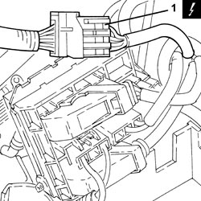
Applies to: engines: 2.2 JTS; all production periods
1. Loosen the band and disconnect the brake servo vacuum intake pipe, air chamber side.

Applies to: engines: 2.2 JTS; all production periods
1. Disconnect the rapid connector for the fuel vapour pipe intermediate coupling.
2. Disconnect the rapid connector for the fuel supply pipe, multiple connector side.
- Discharge the fuel supply system pressure.

Applies to: engines: 2.2 JTS; all production periods
1. Disconnect the electrical connection for the left upper Lambda sensor.
Description | Connector | |
|---|---|---|
1 | Lambda sensor on pre-catalyzer |
2. Disconnect the electrical connection for the right upper Lambda sensor.
Description | Connector | |
|---|---|---|
2 | Lambda sensor on pre-catalyzer -2 |
3. Disconnect the electrical connection for the left rear Lambda sensor to the catalytic converter.
Description | Connector | |
|---|---|---|
3 | Lambda sensor on catalytic converter |
4. Disconnect the electrical connection for the right rear Lambda sensor to the catalytic converter.
Description | Connector | |
|---|---|---|
4 | Lambda sensor on catalytic converter - 2 |

Applies to: engines: 2.2 JTS; all production periods
1. Disconnect the rapid connectors for the air conditioning system heater coolant inlet and outlet pipes.
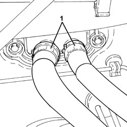
Applies to: engines: 2.2 JTS; all production periods
1. Loosen the band and disconnect the supply pipe from the engine coolant reservoir.

Applies to: engines: 2.2 JTS; all production periods
Op. 2127C22 PIPE FROM HYDRAULIC SPEED SELECTION ACTUATOR UNIT TO FLUID RESERVOIR - R.R.
Op. 2127C12 HYDRAULIC GEAR SELECTION FLUID RESERVOIR - R.R.
Op. 2127C40 HYDRAULIC SPEED SELECTION HYDRAULIC ACTUATOR UNIT AND CLUTCH - R.R.
Op. 4450B12 FRONT WHEELS (TWO) - R+R
Op. 1076B72 INTERMEDIATE EXHAUST PIPE WITH HOSE SECTION - R+R
1. Undo the bolts (1a) and move the brake calliper assemblies (1b) to the side and secure them appropriately.

Applies to: engines: 2.2 JTS; all production periods
1. Undo the nuts fixing the steering rods to the front steering knuckles.
2. Disconnect the steering rods (2a) from the front steering knuckles using the tool (2b).
Tool | Description | Function | Validity |
|---|---|---|---|
1871000700 | Extractor | Extracting steering rod from strut |
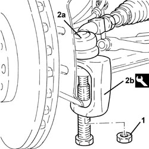
Applies to: engines: 2.2 JTS; all production periods
1. Undo the nuts (1a) and disconnect the front suspension upper track control arms (1b) from the steering knuckles (1c).

Applies to: engines: 2.2 JTS; all production periods
1. Undo the pins (1a) and remove the front brake discs (1b).
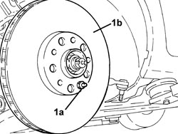
Applies to: engines: 2.2 JTS; all production periods
1. Undo the nuts (1a) and disconnect the lower track control arms (1b) from the steering knuckles.

Applies to: engines: 2.2 JTS; all production periods
1. Remove the left front wheel steering knuckle (1a) complete with driveshaft (1b).
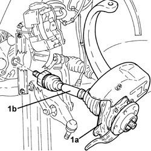
Applies to: engines: 2.2 JTS; all production periods
1. Loosen the bolts fixing the intermediate driveshaft to the mounting.
2. Remove the right front wheel steering knuckle (2a) complete with driveshaft (2b) and intermediate driveshaft (2c).

Applies to: engines: 2.2 JTS; all production periods
- Position a hydraulic jack under the engine crankcase sump.
1. Undo the bolts fixing the power unit lower reaction rod, engine crankcase sump side.
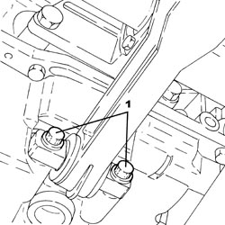
Applies to: engines: 2.2 JTS; all production periods
1. Undo the bolts fixing the power unit rear support flexible mounting, rigid support side.
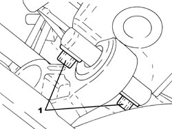
Applies to: engines: 2.2 JTS; all production periods
- Remove the hydraulic jack under the engine crankcase sump.
1. Support the power unit using a hydraulic hoist (1a) and the tool (1b) connected to the mounting brackets (1c).
Tool | Description | Function | Validity |
|---|---|---|---|
1871001700 | Balance | Removing/ refitting power unit |
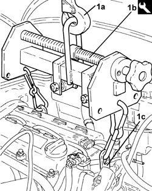
Applies to: engines: 2.2 JTS; all production periods
1. Undo the bolts (1a), (1b) and remove the flexible mounting for power unit timing side front support (1c) complete with power assisted steering fluid reservoir mounting bracket (1d).

Applies to: engines: 2.2 JTS; all production periods
1. Undo the bolts (1a), (1b), then remove the gearbox side support flexible mounting (1c).

Applies to: engines: 2.2 JTS; all production periods
1. Using the hydraulic hoist, remove the power unit from the engine compartment and place it on a suitable support.

Applies to: engines: 2.2 JTS; all production periods
- Release the power unit from the support tools.
Applies to: engines: 2.2 JTS; all production periods
Refitting
Removing- Secure the power unit using the support tools.
- Place the power unit in its housing using the hydraulic hoist.
1. Place the gearbox side support flexible mounting (1a) in its housing and secure it tightening the bolts (1b) and the new bolts (1c) to the recommended torque.
Component | Fastening | dia | Value (daNm) | Validity |
|---|---|---|---|---|
Gearbox side flexible mounting to body | Bolt | M10 | 5.4 ÷ 6.6 |
Component | Fastening | dia | Value (daNm) | Validity |
|---|---|---|---|---|
Gearbox side power unit rigid support to gearbox | Bolt (to be replaced) | M12 | 6.3 ÷ 7.7 + 45° |
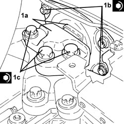
Applies to: engines: 2.2 JTS; all production periods
1. Place timing side power unit front support flexible mounting (1a) in its housing complete with power assisted steering fluid reservoir mounting bracket (1b) and secure it by tightening bolts (1c) and (1d) to the recommended torque.
Component | Fastening | dia | Value (daNm) | Validity |
|---|---|---|---|---|
Timing side flexible mounting to rigid mount | Bolt (to be replaced) | M12 | 6.3 ÷ 7.7 + 90° |
Component | Fastening | dia | Value (daNm) | Validity |
|---|---|---|---|---|
Timing side flexible mounting to body | Bolt (to be replaced) | M12 | 6.3 ÷ 7.7 + 90° |

Applies to: engines: 2.2 JTS; all production periods
- Remove the hydraulic hoist and tool used for supporting the power unit safely.
- Position a hydraulic jack under the engine crankcase sump.
1. Tighten the bolts fixing the power unit rear support flexible mounting, rigid support side to the recommended torque.
Component | Fastening | dia | Value (daNm) | Validity |
|---|---|---|---|---|
Power unit rear support flexible mounting - rigid support side | Bolt | M10 | 5.4 ÷ 6.6 |

Applies to: engines: 2.2 JTS; all production periods
1. Tighten the bolts fixing the power unit lower reaction rod, engine crankcase sump side to the recommended torque.
Component | Fastening | dia | Value (daNm) | Validity |
|---|---|---|---|---|
Engine side lower reaction rod to engine | Bolt | M10 | 5.4 ÷ 6.6 |
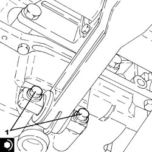
Applies to: engines: 2.2 JTS; all production periods
- Remove the hydraulic jack under the engine crankcase sump.
- Place the right front wheel steering knuckle in its housing complete with driveshaft and intermediate driveshaft.
- Tighten the bolts fixing the intermediate driveshaft to the mounting to the recommended torque.
Component | Fastening | dia | Value (daNm) | Validity |
|---|---|---|---|---|
Intermediate driveshaft | Bolt | M6 | 0.7 ÷ 1.1 |
- Place the left front wheel steering knuckle in its housing complete with driveshaft.
1. Connect the lower track control arms (1a) to the steering knuckles and secure them tightening the nuts (1b) to the recommended torque.
Component | Fastening | dia | Value (daNm) | Validity |
|---|---|---|---|---|
Front suspension lower wishbone - strut side | Nut | M14 | 8.1 ÷ 9.9 |
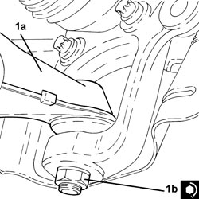
Applies to: engines: 2.2 JTS; all production periods
1. Position the front brake discs (1a) in their housings and secure them tightening the pins (1b) to the recommended torque.
Component | Fastening | dia | Value (daNm) | Validity |
|---|---|---|---|---|
Front brake discs | Bolt | M10 | 0.6 ÷ 0.8 |
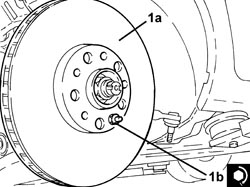
Applies to: engines: 2.2 JTS; all production periods
1. Connect the front suspension upper track control arms (1a) to the steering knuckles (1b) and secure them tightening the nuts (1c) to the recommended torque.
Component | Fastening | dia | Value (daNm) | Validity |
|---|---|---|---|---|
Front suspension upper wishbones - strut side | Nut | M10 | 4.1 ÷ 5.0 |
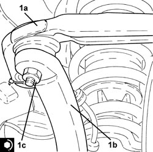
Applies to: engines: 2.2 JTS; all production periods
1. Connect the steering links (1a) to the front steering knuckles and secure them tightening the new nuts (1b) to the specified torque.
Component | Fastening | dia | Value (daNm) | Validity |
|---|---|---|---|---|
Steering rod to wheel strut | Nut | M12 | 9.0 ÷ 11.0 |
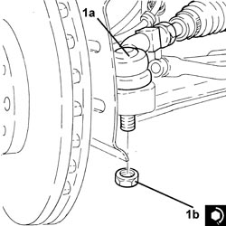
Applies to: engines: 2.2 JTS; all production periods
1. Position the brake calliper assemblies (1a) in their housings and secure them tightening the bolts (1b) to the recommended torque.
Component | Fastening | dia | Value (daNm) | Validity |
|---|---|---|---|---|
Front brake callipers | Bolt | M8 | 2.5 ÷ 3.0 | 2.2 JTS 3.2 JTS |
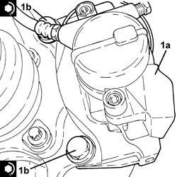
Applies to: engines: 2.2 JTS; all production periods
Op. 1076B72 INTERMEDIATE EXHAUST PIPE WITH HOSE SECTION - R+R
Op. 4450B12 FRONT WHEELS (TWO) - R+R
Op. 2127C40 HYDRAULIC SPEED SELECTION HYDRAULIC ACTUATOR UNIT AND CLUTCH - R.R.
Op. 2127C12 HYDRAULIC GEAR SELECTION FLUID RESERVOIR - R.R.
Op. 2127C22 PIPE FROM HYDRAULIC SPEED SELECTION ACTUATOR UNIT TO FLUID RESERVOIR - R.R.
Applies to: engines: 2.2 JTS; all production periods
- Connect the coolant return pipe to the engine coolant reservoir and tighten the collar.
- Connect the rapid connectors for the air conditioning system heater coolant inlet and outlet pipes.
- Connect the electrical connections for the Lambda sensors.
- Connect the rapid connector for the fuel supply pipe, multiple connector side.
- Connect the rapid connector for the fuel vapour pipe intermediate coupling.
- Connect the brake servo vacuum intake pipe, air chamber side and tighten the band.
- Connect the electrical connection, place the junction unit in its housing and close the cover.
- Place the air conditioning system pipes in their housings.
- Connect the air conditioning pipes intermediate flange and tighten the nut to the recommended torque.
Component | Fastening | dia | Value (daNm) | Validity |
|---|---|---|---|---|
EXPANSION VALVE SIDE PIPE CONNECTOR | Nut | M8 | 1.8 ÷ 2.2 |
- Connect the air conditioning compressor inlet/outlet pipes and secure them by tightening the bolt to the recommended torque.
Component | Fastening | dia | Value (daNm) | Validity |
|---|---|---|---|---|
COMPRESSOR SIDE PIPE CONNECTOR | Bolt | M8x90 | 2.2 ÷ 2.6 |
- Place the heat exchanger in position and fasten it with the band.
- Connect the rapid connector for the power assisted steering system heat exchanger inlet pipe, heat exchanger side.
- Connect the coolant return pipe, cylinder head side, and tighten the band.
- Place the power assisted steering fluid reservoir complete with pipes in its housing and secure it using the bolts.
- Connect the rapid connector for the return pipe from the heat exchanger pipe to the power assisted steering fluid reservoir, heat exchanger side.
- Connect the supply pipe from the fluid reservoir to the power assisted steering pump, power assisted steering pump side, and tighten the band.
Op. 4130B40 SUPPLY PIPE FROM PUMP TO POWER STEERING BOX - R.R.
Op. 7210A18 R.R FRONT CROSSMEMBER
Op. 1048A34 HOSE(S) FROM FLOW METER TO AIR SUPPLY CAPACITY CASE - R + R
Op. 1048A28 VACUUM AIR CIRCUIT RESONATOR PIPE - R+R
Op. 1088B20 ENGINE COOLING RADIATOR - R + R
Op. 7210A15 R.R. FRONT WING/HEADLAMP HOUSING CROSSMEMBER
Op. 7055B54 UNDER ENGINE PROTECTION/GUARD - R.R.
Op. 0010T20 ENGINE COOLANT - CHANGE
Op. 0010T41 MANUAL GEARBOX OIL CHECK LEVEL AND TOP UP IF NECESSARY
Op. 0010T71 POWER STEERING FLUID CHECK LEVEL AND TOP UP IF NECESSARY
Op. 0010T75 HYDRAULIC POWER STEERING SYSTEM BLEED AIR
Op. 0010T84 COOLANT FOR AIR CONDITIONING SYSTEM - DEHYDRATE AND REPRESSURIZE
Op. 0010T48 HYDRAULIC SYSTEM FOR GEARBOX WITH HYDRAULIC SELECTION - BLEED AIR
Op. 0010T60 ELECTROHYDRAULIC SELECTION GEARBOX CLUTCH HYDRAULIC SYSTEM - BLEED AIR
Op. 0010T61 ELECTROHYDRAULIC SELECTION GEARBOX CLUTCH FLUID - CHECK LEVEL AND TOP UP IF NECESSARY
- Place the battery drip tray complete with injection/ignition system control unit in its housing and secure it using the bolts.
- Connect the electrical connections to the injection/ignition system control unit.
- Remove the vehicle from the lift.
Topics linked from this page (29)
- 0010T20 ENGINE COOLANT - CHANGE
- 0010T41 MANUAL GEARBOX OIL CHECK LEVEL AND TOP UP IF NECESSARY
- 0010T47 HYDRAULIC SYSTEM FLUID FOR GEARBOX WITH HYDRAULIC SELECTION CHECK LEVEL AND TOP UP, IF NECESSARY
- 0010T48 HYDRAULIC SYSTEM FOR GEARBOX WITH HYDRAULIC SELECTION - BLEED AIR
- 0010T60 ELECTROHYDRAULIC SELECTION GEARBOX CLUTCH HYDRAULIC SYSTEM - BLEED AIR
- 0010T61 ELECTROHYDRAULIC SELECTION GEARBOX CLUTCH FLUID - CHECK LEVEL AND TOP UP IF NECESSARY
- 0010T71 POWER STEERING FLUID CHECK LEVEL AND TOP UP IF NECESSARY
- 0010T75 HYDRAULIC POWER STEERING SYSTEM BLEED AIR
- 0010T84 COOLANT FOR AIR CONDITIONING SYSTEM - DEHYDRATE AND REPRESSURIZE
- 1048A28 VACUUM AIR CIRCUIT RESONATOR PIPE - R+R
- 1048A34 HOSE(S) FROM FLOW METER TO AIR SUPPLY CAPACITY CASE - R + R
- 1076B72 INTERMEDIATE EXHAUST PIPE WITH HOSE SECTION - R+R
- 1088B20 ENGINE COOLING RADIATOR - R + R
- 2127C12 HYDRAULIC GEAR SELECTION FLUID RESERVOIR - R.R.
- 2127C22 PIPE FROM HYDRAULIC SPEED SELECTION ACTUATOR UNIT TO FLUID RESERVOIR - R.R.
- 2127C40 HYDRAULIC SPEED SELECTION HYDRAULIC ACTUATOR UNIT AND CLUTCH - R.R.
- 4130B40 SUPPLY PIPE FROM PUMP TO POWER STEERING BOX - R.R.
- 4450B12 FRONT WHEELS (TWO) - R+R
- 5530B10 BATTERY - R+R
- 7055B54 UNDER ENGINE PROTECTION/GUARD - R.R.
- 7210A15 R.R. FRONT WING/HEADLAMP HOUSING CROSSMEMBER
- 7210A18 R.R FRONT CROSSMEMBER
- 7210E10 R.R. FRONT BUMPER
- D004 FRONT/ENGINE COUPLING
- K015 LAMBDA SENSOR ON PRE-CATALYZER
- K016 LAMBDA SENSOR ON PRE-CATALYZER -2
- K017 LAMBDA SENSOR ON CATALYZER
- K018 LAMBDA SENSOR ON CATALYZER - 2
- M010 ENGINE MANAGEMENT ECU